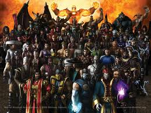

Mortal Kombat
 De: La Frikipedia, la enciclopedia extremadamente seria.
De: La Frikipedia, la enciclopedia extremadamente seria.
De la serie Videojuegos:
Mortal Kombat

| Desarrollado por:
|
Midway
|
| Distribuido por:
|
Internete
|
| Diseñado por:
|
Sting (luchador de la Akira Toriyama
|
| Motor
|
De Renault Gordini modelo 62.
|
| Género(s)
|
hostias/violencio
|
| Fecha de lanzamiento:
|
de Arpón (y dice Getoverjir!!!)
|
| Modos de juego:
|
Lucha violenta, violencia 2 players, y Torneo sanguinario.
|
| Requisitos:
|
ser sádico
|
| Disponible en:
|
el templo de Sheng Long
|
| Formatos:
|
Sega, Nintendo, etcétera
|
| Edades:
|
+18 (mucha sangre)
|
| Puntuaciones:
|
100 puntos (si les damos menos los chabones se enojan y nos cagan a patadas)
|
Me retas?
«Uh ese me da miedo, es el del chabón con una lanza que se la clava a otros y chupa la vida o algo así, no?»
~ Monserrat Cadena sobre el Mortal Kombat
Kombateé Normaleé con sangreé es el nombre original de este juego que tuvo mucho éxito, puesto que salió a la par de las series de anime en las cuales solo se cagaban a piñas. Creado originalmente por Quentin cambió su nombre y lo publicó bajo los seudónimos de Ed Boon, John Tobías y Williams, aunque tuvo problemas con la escudería automovilística por lo que lo cambió a Midway.
Exito
El juego se hizo famoso por ser extremadamente violento y sangriento (prueba de que los pacifistas de todo el cumbia, o como las mandarinas en Ecuador (sin ámbito de ofender).
Historia
 Normal que hayan tantos si en cada juego se
plagian inventan 10
Un inmortal grandote y con una armadura muy conocido como el violador emperador Shao Kahn, se dedicó a follar viajar por distintas dimensiones o realidades y conquistarlas, y ahora le tiene ganas a la Tierra. En esta un grupo de sabios hicieron un video porno torneo llamado Mortal Kombat. Si los representantes del mundo de este grandote, ganan 10 violaciones torneos concecutivos, este tiene la libertad de entrar a la Tierra y hacer la mierda suya. Shang Tsung, un prostituto hechicero (en toda historia hay uno) y Goro, una puta mole de 2 metros con 4 brazos ya han ganado 9 y ahora es la última oportunidad de la Tierra (que miedo).
- Historia
robada extraída de la introducción de Mortal Kombat Trilogy.
Scorpion y Subzero (Izquierda y Derecha) entreteniendo a un montón de monjes pervertidos (y luego dicen de los católicos)
Personajes
- Scorpion: Proveniente de una familia de
gays famosos, La Muerte Jr. es uno de los primeros Power Rangers junto con Ermac, Rain, Reptile, Sub-zero y Noob Saibot (el negrito ese que es un guarro ninja). Pero iba a tener un coño giro mortal en su mierda de vida cuando Sabans copio su idea y producieran para todo el mundo con otros actores, los Power Rangers. Sin dinero el joven Scorpion acudio a su padre el señor La mierda Muerte, a lo que respondio que ya esta grande para que lo follara
Scorpion nos demuestra que le gusta la cumbia
mantenga. tambien recibio un pene "no" de parte de su hermano gemelo que vive en EEUU, Ghost Rider, con la excusa de que no tenia polla dinero porque siempre gastaba dineo en repuestos de las ruedas que se le quemaban. Sin tener donde ir decide ir al lugar donde menos alquiler cobran, un hotel llamado El Mundo de Scorpion. donde el alquiler es el mas barato ya que las paredes siempre se estan quemando y los muebles estan hechos con huesos robados del cementerio. El pendejo más gay famoso de todos, es un ninja. Lo mató Sub-Zero V y el volvió del Netherealm (infierno) para vengar su muerte la de sus amigos y la de su familia. Usa una máscara de gomaespuma para ocultar su rostro: un cráneo envuelto en llamas. Parece que tiene algo sexual con sub-zero II, pero lo dejo cuando vio que en la cama tambien estaba frost
- Sub-Zero I: Pertenece a un clan de
homosexuales pajeros guerreros llamado Federacion de Gays Pajeros Lin Kuei. Un tipo que puede congelar a sus oponentes. Mató a Scorpion y después entró al video porno torneo para matar al Viejo pero vino un violador Scorpion y lo violó mató a él. Tiene su propio video porno videojuego.
-
Jigoro Kano: Un criminal buscado en quichicientos países. Tiene un ojo robotídico que dispara rayos lásers y tiene un cinturón en diagonal. Se dice que se lo robó a Chewbacca o a Deidara.
NOTA: se ha confirmado que la ultima afirmacion es mentira, debido a que Chewbacca siempre pela el ojo y nadie le puede robar
- Liu Kang: (Liu Kanguro) Este es un chino que se cree el mejor por ganar 4 torneos kombat, es un guerrero shaolin, (no confundir con omi). Desafortunadamente lo encuentran con doping positivo en anfetaminas y fireballminas, por lo que le son arrebatados inmediatamente los titulos. Tiene tendencias epilepticas cuando hace ataques como la patada de la bici, porque empieza a tirar gritos a lo pendejo, tiene la voz parecida a justin bieber, pero mas de macho. Es condenado a
escuchar a JB muerte y imposibilitado a participar en cualquier torneo de artes marciales hasta que reviva. Lamentablemente para Shao Khan, Liu se encontro con Michael Jackson, quien le dijo que lo podria volver a la vida facilmente a cambio de su primogenito. Luego de cerrar el trato, michael grito: "cause this is thrilleeeer", con lo que rapidamente Liu volvio a la vida listo para el siguiente porno Mortal Kombat.
- Shang Sunga Hermano de Shang Tsung y gigolo que se acosto con todas las chicas de todas las sagas del MK. usualmente no se puede usar pero se puede desbloquear hasta la version de MK X.
- Sonya: Una policía rubia que persigue a Kano mientras que la mayoría de los otros personajes varones la persiguen a ella
los ultimos rumores dicen que es una bisexual hija de puta.Al final coje con un sacerdote chuck norris y muere comiendo su enorme y metalica poronga
- Shang Tsung (Shansún): Es un viejo
gay hechicero de magia negra. Él aparente anciano puede transformarse en el que quiere para confundir a los jugadores, puede ver en tu alma tus miedos (miedos como él mismo, el diablo, los wombat y una patada giratoria de Chuck Norris) y robarte el alma para mantenerse joven y poderoso.
- Goro: (No confundir con 4 Brazos de Ben 10) Principe de los Shokam (tipos con 4 brazos) que mete miedo y ha sido campeón del torneo por muuuucho muucho tiempo. Como dato curioso, se dice que actualmente habita en Mexico y que esta estudiando en una secundaria de Tamaulipas con el nombre de Viviana.
- Reptile (Réptail): Bicho verde
linterna verde puede hacerse invisible y se dedica a molestar a los otros personajes y hacer chistes con rimas (muy malos). Aparentemente es el único de su raza, por lo que se baraja la posibilidad de que sea gay.
NOTA: se ha confirmado que la ultima afirmacion es mentira(otra vez), ya que al parecer Reptile está con Khameleon.
- Kung Lao:
(Kulo Pelao)o (Culeado) Otro gay chino que tiene una envidia de la mierda contra liu kang, el dice yo soy el mejor yo soy mejor que ese puto de Liu Kang, tiene un sombrero de lata que también corta jamón. En MKSM según raiden acuso a los malo por eso lo quieren matar
Jhonny Cage siempre va con el torso desnudo usa anteojos de sol
porque se cree reggaytonero para verse mas pintón y levantar tías detrás del plató de filmación.
- Johnny Cage (Yoni Queish): Actor de películas
porno violentas que quiere demostrar que sabe pelear en la vida real pero nadie le cree. Tiene interés en Sonya pero la rubia no le dice ni la hora. Ed Boon y John Tobias se inspiraron en Rob Van Dame y se consiguió un empleo en la WWE
- Sub-Zero II: El hermano del otro Sub-Zero, tiene también la habilidad de congelar y además usa mucho gel. Tiene una cicatriz en el ojo, debido a
un porongazo que vió Scarface mientras se drogaba con hielo picado. tira hielito y tiene algo sexual con scorpion, pero lo dejo a cambio de frost.
- Jax (el negro o Nigga): Negrito policía, compañero de Sonya que también tiene su propio juego
dicen de que se dedica a hacer vídeos porno con la rubia. Tiene dos brazos metálicos que lo hacen el hombre más fuerte del mundo.(A excepción de Chuck Norris que con una patada voladora se la vuela).
Kitana folló con Liu Kang y desde entonces se hizo muy popular entre los fans
- Kitana: Princesa, hija
de puta adoptiva de Shao Kahn y que está enamorada de Liu Kang (tanto, que terminaron culeando), pero el chino la rechazó. Es la mas buena de las 3 (en culo y curvas) hay rumores de que dejo a Liu por Moloch.
- Mileena (la otra puta): Clon sexy (hay que decirlo)de Kitana, fue creada por Shang Tsung. Debido a que Shang abusaba continuamente del cuerpo aún sin vida, se descontró y su creación salió mal (por lo menos la boca que le salio bastante fea, debería ir al dentista). Le gusta presumir su despampanante físico. Antes se desempeño como prostituta, pero lo dejó cuando después de un sexo oral dejó sin genitales a su cliente. Es pareja con Baraka, se besan (no se como con esos dientes) se puso implantes. Shao Khan no quiere pagarle el tratamiento de ortodoncia (debido a que hasta en el Outworld los dentistas son caros).
- Baraka
(Maraka): Mutante del mundo exterior que también debe ir al dentista. Conoció a Mileena y se enamoraron , juntos tiene una hija que se llama Malaka. Tiene problemas para organizar las palabras cuando habla, por ejemplo: "Me yo Baraka llamo" (para los mamones que no comprendieron la frase, dice: "Yo me llamo Baraka"), por lo que es posible que su maestro haya sido Yoda.
-
Thor Raiden: El dios del trueno que tomó forma humana y un palito largo de madera para participar del torneo. Con su forma humana descubrió sus propias debilidades: el rap, los autos caros y joyas. En realidad era Christopher Lambert, en otro de sus intentos de dominar el mundo con su mediocridad interpretativa. Es la version cani de Kung Lao. Usa un OVNI de papel como sombrero.
- Kintaro: Otro bicho de 4 brazos como Goro pero con
penes genes de tigre (sin comentarios). si se enoja se pone como tu suegra cuando le tiras la torta. Este maricón personaje frustró a varios jugadores de MKII, ya que es casi imposible ganarle.
- Cyrax: (Sáiracs) Apodado Mostaza (verídico) otro tipo que fue convertido en robot. Jamás lo expulsan de los boliches porque sabe
pajearse bailar muy bien. Se cree que su maestro de danza era John Travolta, a quien debía pagarle con robo-sexo.
- Sektor: (Séctor) Apodado Ketchup (verídico) Igual a Cyrax pero de color rojo. Despues del perder el clan lin kuei, se hizo gay y formo en japon una base de robots gays llamado
Robots amigables de Mamá tekunin
- Nightwolf (Náigwolf): Indio que tiene de mascota un lobo y un hacha que lanza un aura verde (debería lavarla).Se cree que es un shaman de la aldea apache y que tuvo
sexo relaciones con SilverStone de Shaman king.
- Smoke (Esmóc): El mejor amigo de Sub-Zero I, en Mortal Kombat 3 lo agarraron los de su clan (Lin Kuei) y lo
violaron convirtieron en un consolador robot porque fumaba mucho. A partir de ese momento se convirtió en cleptómano. Tiene prohibido entrar a los bares u otro lugar cerrado. SU VIDA SOCIAL ES DEPLORABLE.
- Noob Saibot (Nub Sáibot): Así quedó Sub-Zero I al llegar al infierno después que lo mató Scorpion. Todos lo molestan por n00b y negro. Con razón su nombre explica porque scorpion lo mato, (N00b = Novato) y su hermano sigue vivo. se hace ninja pero tiene
polla sangre negra por una anomalía con Quan Chi (sin comentarios)
- Shao Kahn: Tipo de gran tamaño (y ego) conocido como el emperador, usa armadura y un casco para tapar lo feo que es (aparte es
un gordo fleto homosexual pelado). Hace mucho llegó a un mundo que se llamaba Edenia lo hizo mierda y ahora se llama Outworld (Mundo Exterior). Usa un gran martillo para machacar papas y cadáveres.
- Sindel: (puta viejuna) Madre de Kitana, se casó
por la fuerza con Shao Kahn pero cuando vió lo feo que era se suicidó. Volvio, ayuda al bien y se cree que se masturba con el cadaver de su esposo muerto Jerrod puta necrofilica
- Stryker (Estráiker): Policía
muy gordo que se dedica a comer pijas rosquillas y tomar semen Coca-cola (o leche de hombre café si es invierno). tira granadas y consoladores bombas, casi se mata cuando vio q estaba gordo
no se sabe que clase de policia es nisiquiera tiene pichula patrullero.
- Sheeva: (puta de 4 brazos) Un shokan transexual... o al menos eso parece. Es muy marimacho, insinúan que
folla sale con Goro, aunque eso no se sabe a ciencia cierta, pero lo que si se sabe es que como tiene 4 brazos tiene la habilidad de hacer cuatro pajas al mismo tiempo.
- Kabal: Uno de los integrantes de la banda Slipknot, o al menos parece tener
sexo parentesco con ellos tipo que usa respirador artificial para... es obvio, para poder respirar. Si se saca la máscara es muy feo (no tanto como Platon) y los que lo ven mueren de un orgasmo paro cardíaco.
- Motaro: Un Centauro con cuernos y una cola robótica con la que tira rayitos (no existe descripcion más precisa). Pasó a ser un minotauro por
falta de tiempo y ganas un hechizo loco, haciendo que el pobre ex centauro caiga en un poso depresivo XD.
Rain demostrando su orgullo
gay - Rain (Réin): Un personaje de relleno que salió de una canción de Prince (verídico). Como se viste de rosado los demás personajes creen que es gay pero no lo es (o por lo menos eso dice él).
- Ermac: Creado por los errores de Programacion de Scorpion. Otro personaje que tiene
sexo influencia de slipknot, hermano gemelo de scorpion, sub cero y reptile , solo cambian de color otro personaje de relleno. Se fuma un porro y empieza a masturbarse levitar y a lanzar pedos rallitos verdes.
- Chamaleon (Chamilion): Otro personaje de relleno. Es un ninja transparente que cambia de colores y salta en una pata.
- Khameleon (Camilion): Otro personaje de relleno. Es un miembro del sexo femenino de la raza de Reptile (Raptors)
pero se desconce si alguna vez se conocieron. Su apariencia es casi igual a la de Chamaleon, con la diferencia de que tiene tetas y pelo largo.
- Kia: Una demonia muy linda que trabajaba para Quan Chi.
- Jataaka (Pronunciación rara): Otra demonia que trabajaba para Quan Chi, pero que fue despedida por tener un nombre de difícil pronunciación.
- Sareena (Sarina): Otra sensual demonio que sirve como esclava
sexual para Quan Chi. Un día de cansó de sus acosos y lo lanzó de un precipicio para quedar libre. Se cree que tuvo una corta relación con Sub-Zero, pero que no funciono debido a que el frío natural del Lin Kuei no permitía su erección.
- Quan Chi: Conocido originalmente por ser el tecladista de kiss, Quan Ignacio, o como sus amigos lo llaman, Quanchi llego al Outworld despues de que su carrera musical fracasase. No encontro su lugar en kiss debido a una mortal pelea con Peter criss. Cuando descubrio que la unica forma que podia salir de este era conquistando la tierra se unio a las fuerzas de Shao Kahn a cambio de que éste busque a peter criss, lo embista y diga: Jajaaa!!!. Conocido como el "Pelado Feo" o el "Hombrecito Gris", es el que mató a los amigos y familia de Scorpion y le hechó la culpa a Sub-zero. Es el hermano de Kratos.el lider del movimiento feminista conocido como las "putas flojas"
- Shinnok: Un dios Ancestral que quería dominar la Tierra pero Raiden no le dejó y lo mandó al infierno por
gustarle justin gayber usar un sombrero tan ridículo. Domino el infierno y se cree mucho con la manitos q lanza.
- Kai: Otro personaje de relleno. También amigo de Liu Kang. Un negro con rallas blancas... como un tigre, pero al revés.
- Reiko: Un sirviente de Shao Kahn que se ponía el casco de este cuando no estaba en casa. Se cree que salia con el clon de shao kahn.
- Jarek: Amigo de Kano, tiene sus mismos poderes y Fatalities, es una muestra de como crear un nuevo personaje sin usar mucha imaginación. En este momento está afrontando un juicio por copyright.
- Tanya: Otra
putaputa barata luchadora que al principio parecía ser buenita pero resultó laburar (trabajar) para los malos. hace el amor con cualquiera que venga y siempre sirve al mal.
- Fujin: Dios del viento, está loco, cree que es Superman, usa una capa roja y se pone a volar. Actualmente está ahciendo un curso de drogadictos anónimos.
- Meat (Mit): Un esqueleto con carne que pelea con hachas (de carnicero) que suda sangre y se le está cayendo un ojo. Cuando un pobre con mucha hambre lo ve se lo quiere mofar
- No Face (No feis): Amigo de Kano que no tiene nariz ni orejas, parecido a Volldemort, producto de usar un lanzallamas y granadas de mano como armas. Ex actor de Jackass.
- Tasia: Chica mala y amiga de Kano que pelea con dos espadas.y coje con una.
- Tremor: Otro amigo de Kano, puede hacer terremotos y arrojar piedras grandes. Es igual que Scorpion fisícamente, pero negro y malo (no, no es africano).
- Hsu Hao: Otra copia de Kano, es igualito a el,solo que éste es oriental y tiene el ojote (no confundir con ojete) en el pecho. Ah, además usa una boina muy ridícula.
- Blaze (Bleis): Un tipo hecho de fuego que habla con Hornbuckle todo el tiempo. Un día comió tacos y cagó toda una pirámide.
- Bo'rai Cho: (Bo-Rra-Cho)Gordo Borracho que entrenó a Liu Kang, Kung Lao y a otros (mientras se alcoholizaba). En otras palabras, es el maestro de los grandes guerreros... me están jodiendo, verdad?
- Mavado: Otro enemigo de Kano, que no se le ocurrio un nombre mas original que mavado copia a malvado. No se ha corroborado pero se dice que es gay.Obtuvo sus poderes en una noche de sexo loco y desenfrenado con chuck norris.
- Drahmin: Un guardaespalda de Quan Chi, pertenece a la raza de los Oni y espanta a sus rivales con las moscas que le andan alrededor. Es como meat, pero con una máscara verde y un socotroco en el brazo.
- Mokap: Amigo de Johnny Cage que se viste con un traje lleno de focos y se dedica a hacer videojuegos de mala calidad.
- Li Mei:
Puta Luchadora que quería liberar a su pueblo de la escalivitud peleando y no lo logró, con el paso del tiempo se casó con el Rey Dragon, según sus propias palabras "no por su dinero o su pene extra-largo de dragón" sino porque lo ama, (aunque todos sabemos que miente)ya que a ella le gustan las grandes como la mia.
- Kenshi: Ciego que pelea con espada y telekinesis. Se cree quedo ciego por ver mucha televisión. Su Hobby es doblar cucharitas con la mente.Segun dicen que es "amigo" de ermac
- Nitara: Vampiresa (en todo sentido de la palabra) muy linda, que se perdió y quiere volver a su casa con su familia. Se hizo amiga de Reptile. Se desconocen otros intereses de ella, aparte de volver con papá y mamá; y chupar sangre de
frikis humanos desprevenidos.
- Frost: Copia de Sub-Zero I pero en versión femenina. Podría ser la hermana de Sub... o el mismísimo Sub disfrazado...pero en realidad es una puta contratado por midway para entretener a sub-zero....no lo consiguio.
- Moloch: Oni de 3 ojos que también es guardaespalda de Quanchi. Tiene una bola de metal encadenada a su mano y una lechuza de mascota. Su mayor frustración fue al descubrir que no podía jugar a los bolos porque cuando lanzaba su bocha era arrastrado con ella.
- Havik: Otro bicho que viene de la realidad del Caos guío a Liu Kang y a sus amigos a donde estaba el Rey Dragón. Puede quebrar todos sus huesos sin sentir dolor (eso, o lo disimula bastante bien). Otro ex-actor de Jackass.
- Shujinko: Cuando era un niño, fue parte de la
pedofilica secta de Bo' Rai Cho, por lo que fue abusado en reiteradas ocasiones por su maestro. En su adolescencia nunca tuvo amigos, hasta que conoció a Damashi, quien encubiertamente lo utilizaba como *perkin para sus siniestros objetivos. Paso todo la vida cumpliendo las órdenes de Damashi, para mala suerte, en una de las misiones cayó a un charco de semem extraño que lo envejeció. En su continuó lecho de muerte, recién se percató de lo saco de wea tonto que fue al dejarse manipular por Damashi. Hermano de Pai Mei.
- Hotaru: Un guardia de Seidán (algún reino lejano) que trabaja para el Rey Dragón. Su Misión es capturar al Sub-Zero I porque mató a muchos parientes de Baraka. Tiene dos banderas pegadas a la espalda y una armadura bastante pesadita... y aún así se mueve con gracia.
- Ashrah: Una
erótica demonio del Netherealm que quiere escapar de ahí y liberarse de su sombrero ridículo (sin ámbito de ofensa a los ridículos que usen uno igual).En el conquest de MKD quiso violar a Ermac con la excusa de que lo tenia que matar por ser segun ella un demonio
- Dairou: Un ex-guardia de Seidán que se corta el pelo al estilo "el Tigre y el Dragón". Ahora es un asesino a sueldo.
A Ken le aburrio pelear con Ryu en
Street Fighter asi que se cambio de identidad, ahora llamado Cobra
- Cobra: El Ken del Estrítfaiter con otro vestuario y otro nombre. Es amigo de Kabal.
- Darrius: Un terrorista/héroe de Seidán, o sea un talibán con look afro de los años 60'.
- Kira: (No confundir con el personaje gay de death note)Una colorada (pelirroja, no confundir con rojos), que vendía armas en Afganistán y se hizo amiga de Kabal. Un dia perdió una apuesta y le implantaron dos balones de fútbol en los senos.
- Taven: Hijo de no se que rey. Es hermano de Daegon. Segun la historia es un tipo que sigue los consejos de un dragon. Su misión final es llegar a luchar contra Blaze convertiendo se en el mejor luchador y evitando el Armageddon (Seguramente me he equivocado en el final-es una historia tan liosa). Al final no evita una mierda y hace que todos se vuelvan más fuertes, cagándola todavía más.
- Daegon: Un pelado lleno de cicatrices y con un ojito todo blanco. Hermano de Taven.
- Onaga El Rey Dragón: El Bicho gigante este era el Emperador original hasta que Shao Kahn lo mató. Ahora volvió para vengarse pero terminó casándose con la Li Mei (en realidad el alma del rey dragón entró en el cuerpo de Retile cuando este quiso incubar el Huevo en que el alama estaba).
- Guardias con máscara: Sirvientes de Shang Tsung que se visten con una mascara
ridícula extraña y unos pantalones acampanados estilo años 60'. Tienen una Lanza pero nunca la usan.
- Cloak: Los sacerdotes oscuros, unos tipos encapuchados que aparecen en MK2, MK3, y en la película y se dedican a ver las peleas o a dormir mientras levitan, mientras intentan que el portal que tienen atrás no los chupe.
- Damashi: Orbe anaranjada
de semén que representa la proyección de la conciencia de Onaga, el Rey Weon. Damashi manipuló a Shujinko para sus perversos y pervertidos planes para conseguir los "Kamasutrogus", que supuestamente tendrían el poder de mantener viril a alguien por el resto de su vida.
- Hornbuckle: Un tipo parecido a Liu Kang que se la pasaba hablando con Blaze en un puente desde MK2. Recientes estudios científicos pretendían demostrar que se trataba de Liu Kang pero al final resultó ser sólo un clon de Liu Kang con pantalones verdes.
- MacGyver: Luchador que gracias a su habilidad e ingenio es invencible. La prueba de su existencia en Mortal Kombat Armageddon está en este video de Youtube.
- Scarlet: Igual que Kitana pero vestida de rojo. Nunca la incluyeron en ningún juego porque tiene una mente demasiado infantil y se viste como los ninjas hombres, dando la sensación de que es lesbiana.
- Edgar: Sin duda el es el mejor luchador, con sus fuertes caidas causa terremotos y desaparece al oponente ahi.
Saga

Los creadores de Mortal Kombat decidieron hacer un videojuego de la Era Attitude por la violencia, sexo y sangre

Y este es otro videojuego de la WWF creado por los mismos del
MKDesde 1992 hasta hoy han hecho muchos juegos para poder abarcar tremenda cantidad de personajes ya nombrados.
- Mortal Kombat (MK) // Mortal Comba
- Mortal Kombat II (MKII) // Mortal Comba Dó
- Mortal Kombat 3 (MK3) // Mortal Comba Tré
- Ultimate Mortal Kombat 3 (UMK3) // Ultimei Mortal Comba Tré
(igual que el MK3 pero con más personajes)
- Mortal Kombat Trilogy (MKT) // Mortal Comba Trilolli (igual que el
UMK3 pero con más personajes)
- Mortal Kombat Mithologies Sub-Zero (MKMSZ o algo así) // Mortal
Comba Mitolollis Sub-Cero (Aventura con Sub-Zero)
- Mortal Kombat 4 (MK4)
- Mortal Kombat Gold (MKG) // (igual que el 4 pero con más
personajes)
- Mortal Kombat Special Forces (MKSF) // Mortal Comba Especial Fors
(Aventura con el Jax)
- Mortal Kombat Advance (MKA) // (el UMK3 con otro título)
- Mortal Kombat Deadly Alliance (MKDA) // Mortal Comba Dedli Alians
- Mortal Kombat Tournament Edition (MKTE) // Mortal Comba
Tornamen Edishon (Otra versión del MKDA)
- Mortal Kombat Deception (MKD) // Mortal Comba Desepshon.
- Mortal Kombat Shaolin Monks (MKSM) // Aventura con cualquiera
- Mortal Kombat Armaggedon (MKA) // (Igual que el Deception pero reuniendo todos los personajes en un solo juego) Son muchos ¿no?
- Mortal Kombat VS DC Universe (MKVSDC) // Ya se habian cansado de tener pocas ventas, por lo que pusieron los de DC Comics
para competir con el Marvel vs Capcom para poner dos publicos en uno (Buena idea no???).
- Mortal Kombat 9(MK9) // Esta version de mortal kombat tiene graficos 3D pero el modo de juego es en 2D(??????)
- Mortal Kombat
XXX X (MKX) // La décima entrega del juego (no se lo cree ni el barbudo), que se sitúa muchos años después del MK9. Incluye 28 personajes, de los cuales 28 son DLC's, y por ellos hay que pagar U$S200 cada uno.
|
|
 Shooter Shooter
 Terror Terror
 Velocidad Velocidad
 Rol Rol
 Estrategia Estrategia
 Aventuras Aventuras
 Fight! Fight!
 Clásicos Clásicos
 Deportivos Deportivos
 Aventura gráfica Aventura gráfica
 Novela visual Novela visual
 Personajes de videojuegos Personajes de videojuegos
|
Autor(es):
- Krusher
- Nexo
- Fordus
- Kurt
- Max Slug
- Danyel
- MKFAN
- Lance Bean
- Aque
- Predator
Frikipedia 2005-2016, Licencia
GFDL 1.2 - Extraído por FrikiLeaks